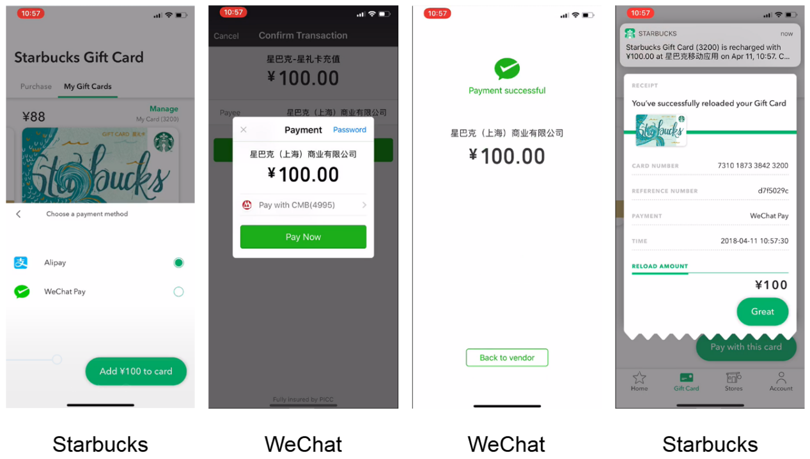
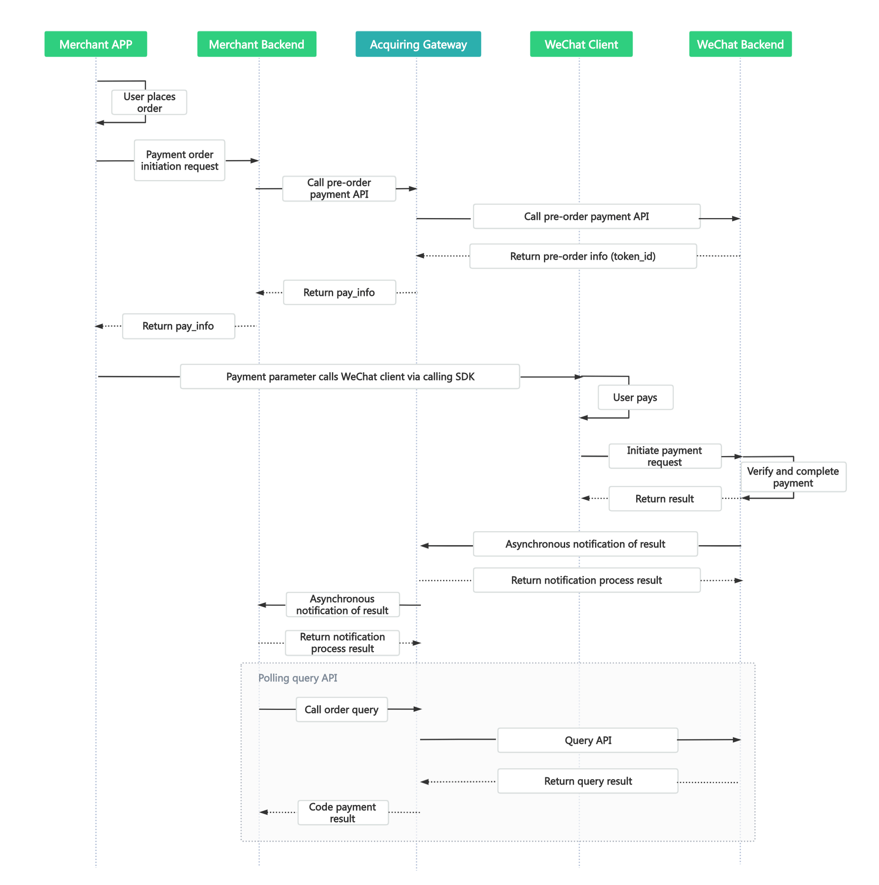

WeChat APP Payment QR Pay（Online）
Online Payment
WeChat APP Payment API Document
| Date | Version | Changes |
|---|---|---|
| 2025-12-19 | 1.0 | Initial draft |
1 Introduction
1.1 Document Overview
WeChat SDK Pay (App Pay) is a payment method where the customer initiates a transaction in the merchant's App, then redirects to the WeChat App to complete the payment.

1.2 Intended Audience
For technical or business personnel of merchant platform service providers for reference and inquiry.
2 Solution Overview
2.1 Business Implementation Flow
API call sequence:
The Order API, Payment Notification API, and Order Query API all involve the signature process, and all calls must be completed on the merchant server side. The sequence diagram is as follows:

3 Data Format
3.1 Submitted Data
Uses the HTTPS standard POST protocol. To ensure the receiver correctly receives the data, the transmitted data must be signed.
{
"service":"pay.weixin.raw.app",
"order_no":"00f78e479fe74a11a73be0feb9999749",
"body":"測試微信支付",
"amount":1.0,
"limit_credit_pay":"0",
"callback_url":"http://localhost/pay/result.html",
"notify_url":"http://localhost/pay/notify",
"client_ip":"127.0.0.1",
"attach":"",
"client_id":"1002",
"store_id":"1001002",
"nonce_str":"ptf3tyjv",
"sign":"64950ED7B13489114C671EFD24C45AC3",
"lang":"en_US"
}
3.2 Return Result Data Format
Successful return:
{
"message":"SUCCESS",
"order_no":"00f78e479fe74a11a73be0feb9999749",
"transaction_id":"FTP202012181649370001",
"submit_time":"20201218164937",
"code_url":"",
"code_img_url":"",
"nonce_str":"o66w9pft",
"sign":"3F6C05280C90E5BB1330524FD61C6121"
}
Error return:
{
"message":"Missing Merchant ID",
JSON"errors":[
{
"field":"mch_id",
"message":"Missing Merchant ID",
"code":"MISSING_FIELD"
}
]
}
When message returns a value other than SUCCESS, it indicates an API call error.
4 Digital Signature
The signature rules for this API follow the platform's unified digital signature specification, covering both basic key-value scenarios and nested field (e.g. items) scenarios, the MD5 algorithm, and multi-language code examples. Please refer to Digital Signature.
4.1 Request Headers
Request parameters:
| Field Name | Variable Name | Required | Type | Description |
|---|---|---|---|---|
| Content Type | Content-Type | Yes | String(32) | Value: application/json, request content type |
API Description
5.1 Order API
5.1.1 Business Function
Initialize the order request, and generate a QR code through this request for QR code payment.
5.1.2 Interaction Mode
Request: Backend synchronous request mode
Return result + notification: Backend request interaction mode + backend notification interaction mode
5.1.3 Request Parameter List
Request URL: https://api.fintechpaymenthub.com/openapi/v1/pay
Request the API via POST JSON body
| Field Name | Variable Name | Required | Type | Description |
|---|---|---|---|---|
| API Type | service | Yes | String(40) | Fixed: pay.weixin.raw.app |
| Client ID | client_id | Yes | String(32) | Merchant client ID |
| Store ID | store_id | Yes | String(50) | Store ID |
| Merchant Order No. | order_no | Yes | String(32) | Order number within the merchant system, up to 32 characters, may contain letters, ensure uniqueness within the merchant system |
| Product Description | body | Yes | String(127) | Product description information |
| Amount | amount | Yes | String(15) | Total order amount (must be greater than 0), unit is yuan. |
| Notification URL | notify_url | Yes | String(255) | URL to receive platform notifications, must be an absolute path, within 255 characters, format such as: http://wap.tenpay.com/tenpay.asp, ensure the platform can access this URL via the internet |
| Terminal IP | client_ip | Yes | String(16) | Machine IP that generated the order |
| Additional Information | attach | No | String(127) | Merchant additional information, can be used as extension parameters |
| Callback URL | callback_url | No | String(255) | Page to return to after the transaction payment is completed, must be an absolute path, within 255 characters, ensure the platform can access this URL via the internet |
| Random String | nonce_str | Yes | String(32) | Random string, no longer than 32 characters, must pass a different value each time |
| Signature | sign | Yes | String(32) | See Chapter 4 "Signature Rules" |
| Language | lang | No | String(32) | Language |
5.1.4 Return Result
Data is returned immediately in JSON format
| Field Name | Variable Name | Required | Type | Description |
|---|---|---|---|---|
| Merchant Order No. | order_no | Yes | String(32） | Order number generated by the merchant |
| FTP Order No. | transaction_id | Yes | String(26） | Order number generated by FTP |
| Submit Time | submit_time | Yes | String(50） | Format is yyyyMMddhhmmss |
| Authorization Code | token_id | Yes | String(64） | Payment authorization code |
| WeChat Official SDK Parameter Information | pay_info | Yes | String | JSON format string, WeChat official SDK parameter information. |
| Result Message | message | Yes | String(500) | Describes the query result, SUCCESS indicates success, otherwise returns other error messages |
| Random String | nonce_str | Yes | String(32) | Random string, no longer than 32 characters |
| Signature | sign | Yes | String(32) | See Chapter 4 "Signature Rules" |
5.1.5 Test Case
Test cases are provided for convenience of calling
Submitted data:
| Example |
|---|
| { "service":"pay.weixin.raw.app", "order_no":"00f78e479fe74a11a73be0feb9999749", "body":"測試微信支付", "amount":1.0, "limit_credit_pay":"0", "callback_url":"http://localhost/pay/result.html", "notify_url":"http://localhost/pay/notify", "client_ip":"127.0.0.1", "attach":"", "client_id":"1002", "store_id":"1001002", "nonce_str":"ptf3tyjv", "sign":"64950ED7B13489114C671EFD24C45AC3", "lang":"en_US" } |
Successfully returned data:
| Example |
|---|
| { "message":"SUCCESS", "order_no":"00f78e479fe74a11a73be0feb9999749", "transaction_id":"FTP202012181649370001", "submit_time":"20201218164937", "code_url":"weixin://wxpay/xxxx", "code_img_url":"", "nonce_str":"o66w9pft", "sign":"3F6C05280C90E5BB1330524FD61C6121" } |
5.2 Order Query API
5.2.1 Business Function
Query specific order information on the platform based on the merchant order number or FTP order number.
5.2.2 Interaction Mode
Backend system call interaction mode
5.2.3 Request Parameter List
Request URL: https://api.fintechpaymenthub.com/openapi/v1/query Request via POST JSON body
| Field Name | Variable Name | Required | Type | Description |
|---|---|---|---|---|
| API Type | service | Yes | String(40) | Fixed: unified.trade.query |
| Client ID | client_id | Yes | String(32) | Merchant client ID |
| Store ID | store_id | Yes | String(50) | Store ID |
| Merchant Order No. | order_no | No | String(32） | Order number generated by the merchant (at least one of order_no and transaction_id is required, when both exist, transaction_id takes priority) |
| FTP Order No. | transaction_id | No | String(26） | FTP order number (at least one of order_no and transaction_id is required, when both exist, transaction_id takes priority) |
| Random String | nonce_str | Yes | String(32) | Random string, no longer than 32 characters |
| Signature | sign | Yes | String(32) | See Chapter 4 "Signature Rules" |
| Language | lang | No | String(32) | Language |
5.2.4 Return Result
Data is returned immediately in JSON format
| Field Name | Variable Name | Required | Type | Description | |
|---|---|---|---|---|---|
| FTP Order No. | transaction_id | Yes | String(26) | Order number generated by FTP | |
| Merchant Order No. | order_no | Yes | String(32) | Order number generated by the merchant | |
| Store ID | store_id | Yes | String(50) | Store ID | |
| Submit Time | submit_time | Yes | String(32) | Format is yyyyMMddhhmmss | |
| Trade State | trade_state | Yes | String(32) | SUCCESS—Payment successful NOTPAY—Pending payment PROCESSING—Processing REFUND—Refund CANCEL—Closed FAIL—Failed | |
| Amount | amount | Yes | Double | Total order amount (must be greater than 0), unit is RMB yuan. For example, if the total order amount is 1 yuan, amount is 1. | |
| Currency | currency | Yes | String(3) | 3-digit ISO currency code, uppercase letters, RMB is CNY. | |
| Payer | payer | Yes | String(50) | Payer | |
| Payment Completion Time | pay_finish_time | Yes | String(32) | Payment completion time, format is yyyyMMddhhmmss, for example December 27, 2009 9:10:10 is represented as 20091227091010. Time zone is GMT+8 Beijing. | |
| Product Description | body | Yes | String(127) | Product description information | |
| Refund Amount | refund_amount | Yes | Double | Refund amount, unit is RMB yuan. For example, if the total order amount is 1 yuan, amount is 1. | |
| Third-party Merchant No. | out_transaction_id | Yes | String(32) | Corresponds to the transaction number in the WeChat transaction record bill details | |
| Additional Information | attach | No | String(127) | Merchant data package, returned as-is | |
| Result Message | message | Yes | String(500) | Describes the query result, SUCCESS indicates success, otherwise returns other error messages | Describes the query result, SUCCESS indicates success, otherwise returns other error messages |
| Random String | nonce_str | Yes | String(32) | Random string, no longer than 32 characters | |
| Signature | sign | Yes | String(32) | See Chapter 4 "Signature Rules" |
5.2.5 Test Case
Test cases are provided for convenience of calling
Submitted data:
| Example |
|---|
| { "service":"unified.trade.query", "order_no":"", "transaction_id":"FTP202012181649370001", "client_id":"1002", "store_id":"1001002", "nonce_str":"ha2n1pje", "sign":"955BEFA725040AA893CA2F852AD09B71", "lang":"en_US" } |
Successfully returned data:
| Example |
|---|
| { "message":"SUCCESS", "transaction_id":"FTP202012181649370001", "order_no":"00f78e479fe74a11a73be0feb9999749", "store_id":"1001002", "submit_time":"20201218164937", "trade_state":"SUCCESS", "amount":1, "currency":"HKD", "payer":"oAOWGsyf4fjHHMzS_wAzfEzGoyWQ", "pay_finish_time":"20201110111036", "body":"測試微信支付", "refund_amount":0, "nonce_str":"dccxwj0e", "sign":"2E4F0838DE0110BB54B67EDAF4B65213", "out_transaction_id":"127500000158202011109001661238", "attach":"sid=1" } |
5.3 Refund API
5.3.1 Business Function
The merchant initiates a refund for an order that has been successfully paid, and the operation result is returned synchronously in the same session.
1. Refund Method
Currently only supports refund via the original payment path.
Note: Refunds to bank cards are not instant, each bank processes at different speeds, generally within 1-3 working days after the refund is initiated.
For partial refunds of the same order, the same order number and different out_refund_no must be set. If a refund fails and is resubmitted, the original out_refund_no should be used. The total refund amount cannot exceed the actual amount paid by the user (cash coupon amounts cannot be refunded).
2. Refund Restrictions
Merchants should pay attention to refund restrictions when processing refunds to avoid refund requests that will not succeed. The main refund restrictions are as follows:
1. On the platform, as long as the cumulative refund amount does not exceed the total payment amount of the transaction order, a transaction order can be refunded multiple times. The refund application number (this parameter exists in the refund API) uniquely identifies a refund, rather than the transaction order number identifying a refund. The refund application number is generated by the merchant, so the merchant
must ensure the uniqueness of the refund application number. Merchants should pay special attention during the refund process that another refund can only be initiated when it is certain that the refund has failed.
2. Currently most banks support full refunds and partial refunds, but a few banks do not support full refunds or partial refunds, or
do not support refunds. In this case, the merchant can coordinate with the seller to refund to the WeChat account.
Currently only the keyless refund API is provided. Merchants who need the keyed refund API, please contact business support.
5.3.2 Interaction Mode
Backend system call interaction mode
5.3.3 Request Parameter List
Request URL: https://api.fintechpaymenthub.com/openapi/v1/refund Request via POST JSON body
| Field Name | Variable Name | Required | Type | Description |
|---|---|---|---|---|
| API Type | service | Yes | String(40) | Fixed: unified.trade.refund |
| Client ID | client_id | Yes | String(32) | Merchant client ID |
| Store ID | store_id | Yes | String(50) | Store ID |
| Merchant Order No. | order_no | Yes | String(32） | Original order number generated by the merchant |
| FTP Order No. | transaction_id | Yes | String(26） | Original order FTP-generated order number |
| Merchant Refund No. | out_refund_no | Yes | String(32） | Merchant refund number, up to 32 characters, may contain letters, ensure uniqueness within the merchant system. Multiple requests with the same refund number, the platform processes as one order and only refunds once. If the refund is unsuccessful, please use the original refund number to re-initiate to avoid duplicate refunds. |
| Remarks | remarks | No | String(255) | Refund remarks |
| Refund Amount | refund_fee | Yes | String(15) | Total refund amount, unit is yuan, partial refund is supported |
| Random String | nonce_str | Yes | String(32) | Random string, no longer than 32 characters |
| Signature | sign | Yes | String(32) | See Chapter 4 "Signature Rules" |
| Language | lang | No | String(32) | Language |
5.3.4 Return Result
Data is returned immediately in JSON format
| Field Name | Variable Name | Required | Type | Description | |
|---|---|---|---|---|---|
| FTP Order No. | transaction_id | Yes | String(26) | Order number generated by FTP | |
| Merchant Order No. | order_no | Yes | String(32) | Order number generated by the merchant | |
| Merchant Refund No. | out_refund_no | Yes | String(32） | Merchant refund number, up to 32 characters, may contain letters, ensure uniqueness within the merchant system. Multiple requests with the same refund number, the platform processes as one order and only refunds once. If the refund is unsuccessful, please use the original refund number to re-initiate to avoid duplicate refunds. | |
| Submit Time | submit_time | Yes | String(32) | Format is yyyyMMddhhmmss | |
| Order Amount | amount | Yes | Double | Order amount, unit is yuan | |
| Refund Amount | refund_amount | Yes | Double | Refund amount, unit is yuan | |
| Result Message | message | Yes | String(500) | Describes the query result, SUCCESS indicates success, otherwise returns other error messages | Describes the query result, SUCCESS indicates success, otherwise returns other error messages |
| Random String | nonce_str | Yes | String(32) | Random string, no longer than 32 characters | |
| Signature | sign | Yes | String(32) | See Chapter 4 "Signature Rules" |
5.3.5 Test Case
Test cases are provided for convenience of calling
Submitted data:
| Example |
|---|
| { "service":"unified.trade.refund", "order_no":"", "transaction_id":"FTP202012181649370001", "out_refund_no":"T1608281521535", "remarks":"Test Pay Orders", "refund_fee":1.0, "client_id":"1002", "store_id":"1001002", "nonce_str":"rcxg50sg", "sign":"213F4AEE4E375C61B0243A93E9CFC515", "callback_url":"http://localhost/pay/result.html" } |
Successfully returned data:
| Example |
|---|
| { "message":"SUCCESS", "order_no":"00f78e479fe74a11a73be0feb9999749", "transaction_id":"FTP202012181649370001", "out_refund_no":"T1608281521535", "submit_time":"20201218165201", "amount":1, "refund_amount":1, "nonce_str":"t2uycm0j", "sign":"D41D8CD98F00B204E9800998ECF8427E", "lang":"en_US" } |
5.4 Refund Query API
5.4.1 Business Function
After submitting a refund application, query the refund status by calling this API.
5.4.2 Interaction Mode
Backend system call interaction mode
5.4.3 Request Parameter List
Request URL: https://api.fintechpaymenthub.com/openapi/v1/refundQuery Request via POST JSON body
| Field Name | Variable Name | Required | Type | Description |
|---|---|---|---|---|
| API Type | service | Yes | String(40) | Fixed: unified.trade.refundquery |
| Client ID | client_id | Yes | String(32) | Merchant client ID |
| Store ID | store_id | Yes | String(50) | Store ID |
| Merchant Order No. | order_no | No | String(32） | Merchant order number returned by the refund, also the merchant order number of the order |
| FTP Order No. | transaction_id | No | String(26） | FTP order number returned by the refund |
| Merchant Refund No. | out_refund_no | No | String(32） | Refund number generated by the merchant |
| Third-party Refund No. | to_order_sn | No | String(255) | Third-party refund number, if multiple exist, priority is: to_order_sn > out_refund_no > transaction_id > order_no |
| Random String | nonce_str | Yes | String(32) | Random string, no longer than 32 characters |
| Signature | sign | Yes | String(32) | See Chapter 4 "Signature Rules" |
| Language | lang | No | String(32) | Language |
5.4.4 Return Result
Data is returned immediately in JSON format
| Field Name | Variable Name | Required | Type | Description |
|---|---|---|---|---|
| FTP Order No. | transaction_id | Yes | String(26) | FTP order number corresponding to the order |
| Merchant Order No. | order_no | Yes | String(32) | Merchant order number corresponding to the order |
| Refund Amount | total_fee | Yes | Double | Total refund amount, unit is yuan |
| Refund Count | refund_count | Yes | Int | Number of refund records |
| Merchant Refund No. | out_refund_no_n | Yes | String(32） | Merchant refund number, up to 32 characters, may contain letters, ensure uniqueness within the merchant system. Multiple requests with the same refund number, the platform processes as one order and only refunds once. If the refund is unsuccessful, please use the original refund number to re-initiate to avoid duplicate refunds. First refund return field: out_refund_no_1, Second refund return field: out_refund_no_2, and so on. |
| FTP Refund Order No. | refund_id_n | Yes | String(32） | FTP refund order number |
| Third-party Refund No. | to_order_sn_n | Yes | String(32） | Third-party refund number |
| Refund Amount | refund_amount_n | Yes | Double | Refund amount, unit is yuan |
| Refund Time | refund_time_n | Yes | String(14) | yyyyMMddHHmmss |
| Refund Status | refund_status_n | Yes | String(16) | Refund status: SUCCESS—Refund successful FAIL—Refund failed PROCESSING—Refund processing NOTSURE—Undetermined, merchant needs to re-initiate with the original refund number CHANGE—Transferred to disbursement, when refunding to bank and the user's bank account is invalidated or frozen, causing the original path refund to bank card to fail, funds return to the merchant's cash account, requiring merchant manual intervention to refund via offline or platform transfer. |
| Result Message | message | Yes | String(500) | Describes the query result, SUCCESS indicates success, otherwise returns other error messages |
| Random String | nonce_str | Yes | String(32) | Random string, no longer than 32 characters |
| Signature | sign | Yes | String(32) | See Chapter 4 "Signature Rules" |
5.4.5 Test Case
Test cases are provided for convenience of calling
Submitted data:
| Example |
|---|
| { "service":"unified.trade.refundquery", "client_id":"1001", "store_id":"1001001", "transaction_id":"FTP202012181649370001", "order_no":"", "out_refund_no":"", "to_order_sn":"", "nonce_str":"bhdswd00", "sign":"EDD59501B4E5FA849E352E23668480C4", "callback_url":"http://localhost/pay/result.html" } |
Successfully returned data:
| Example |
|---|
| { "message":"SUCCESS", "transaction_id":"FTP202012181624320001", "order_no":"TALWEBO20210514114611632", "total_fee":1, "refund_count":1, "nonce_str":"401n5buh", "out_refund_no_1":"T9802e9e18ff340548357bfba730d407", "refund_id_1":"FTP202105141152540001", "refund_amount_1":1, "to_order_sn_1":"121500000214202105141132335702", "refund_time_1":"20210514115254", "refund_status_1":"SUCCESS", "sign":"7A5CA8D8BD0F4E9F78641F9433FD3A4D", "lang":"en_US" } |
5.5 Payment Notification API
5.5.1 Business Function
After payment is completed, the system will notify relevant data to the notify_url filled in during ordering. The notification URL is the notify_url parameter submitted in the payment API. After payment is completed, the platform will send relevant payment and user information to this URL,
the merchant needs to receive and process the information.
For backend notification interaction, if the platform receives a response from the merchant that is not the pure string "success" or exceeds 5 seconds before returning, the platform considers the notification failed. The platform will indirectly re-initiate notifications through a certain strategy (notification frequency is 0/15/15/30/180/1800/1800/1800/1800/3600, unit: seconds) to maximize the notification success rate, but does not guarantee that the notification will ultimately succeed.
Since backend notifications may be resent, the same notification may be sent to the merchant system multiple times. The merchant system must be able to correctly handle duplicate notifications.
The recommended approach is, when receiving a notification for processing, first check the status of the corresponding business data to determine whether the notification has already been processed. If not processed, then process it; if already processed, directly return a success result. Before checking and processing the status of the business data, use data locks for concurrency control to avoid data confusion caused by function reentry.
Special note: After the merchant backend receives the notification parameters, it must verify the order number order_no and order amount amount in the received notification parameters against the order and amount in its own business system. Only after verification is consistent, update the database order status. Backend notification is performed via the notify_url in the request, returning data stream via POST method, the specific information is an XML format string (merchants should pay attention when processing)
5.5.2 Interaction Mode
Backend notification mode
5.5.3 Return Parameter List
Data is returned immediately in JSON format
| Field Name | Variable Name | Required | Type | Description | |
|---|---|---|---|---|---|
| FTP Order No. | transaction_id | Yes | String(26) | Order number generated by FTP | |
| Merchant Order No. | order_no | Yes | String(32) | Order number generated by the merchant | |
| Third-party Merchant No. | out_transaction_id | Yes | String(32) | Corresponds to the transaction number in the WeChat transaction record bill details | |
| Store ID | store_id | Yes | String(50) | Store ID | |
| Submit Time | submit_time | Yes | String(32) | Format is yyyyMMddhhmmss | |
| Trade State | trade_state | Yes | String(32) | SUCCESS—Payment successful PROCESSING—Processing CANCEL—Closed FAIL—Failed | |
| Order Amount | amount | Yes | Double | Total order amount (must be greater than 0), unit is RMB yuan. For example, if the total order amount is 1 yuan, amount is 1. | |
| Order Currency | currency | Yes | String(3) | 3-digit ISO currency code, uppercase letters, RMB is CNY. | |
| Payer | payer | Yes | String(50) | Payer | |
| Payment Completion Time | pay_finish_time | Yes | String(32) | Payment completion time, format is yyyyMMddhhmmss, for example December 27, 2009 9:10:10 is represented as 20091227091010. Time zone is GMT+8 Beijing. | |
| User Identifier | openid | No | String(128) | User's WeChat account | |
| Whether Following Official Account | is_subscribe | Yes | String(1) | Whether the user follows the service provider's official account, Y-Following, N-Not following (returned by WeChat parameter) | |
| Additional Information | attach | No | String(127) | Merchant data package, returned as-is | |
| Transaction Type | trade_type | Yes | String(32) | Fixed: pay.weixin.raw.app | |
| Payment Currency | pay_currency | No | String(32) | Payment currency, needs to be returned based on actual situation | |
| Result Message | message | Yes | String(500) | Describes the query result, SUCCESS indicates success, otherwise returns other error messages | Describes the query result, SUCCESS indicates success, otherwise returns other error messages |
| Random String | nonce_str | Yes | String(32) | Random string, no longer than 32 characters | |
| Signature | sign | Yes | String(32) | See Chapter 4 "Signature Rules" |
5.5.4 Test Case
Test cases are provided for convenience of calling
Submitted data:
| Example |
|---|
| { "message":"SUCCESS", "order_no":"432259d302bc486d898d139431869e6b", "transaction_id":"FTP202012181653320001", "out_transaction_id":"2020111022001311413118431156", "store_id":"1001002", "submit_time":"20201218165332", "trade_state":"SUCCESS", "amount":1, "currency":"HKD", "payer":"oAOWGsyf4fjHHMzS_wAzfEzGoyWQ", "pay_finish_time":"20201110111036", "openid":"oAOWGsyf4fjHHMzS_wAzfEzGoyWQ", "nonce_str":"g1iwi4fg", "trade_type":"pay.weixin.native.intl", "sign":"9983066974A7779BD16505AE7D6752C5", "pay_currency":"HKD", "is_subscribe":"N" } |
6 Error Codes
| Error Code | Description |
|---|---|
| MISSING_FIELD | Field not provided |
| INVALID_FIELD | Field validation error |
| NO_EXISTS | Data does not exist |
| OTHER | Other error |
| INVALID_SCOPE | Data out of range |
| INVALID_LENGTH | Data length exceeds limit |
| INCORRECT_SIGNATURE | Invalid signature |
| EXPIRED_ORDER | Order has expired |
| PAY_GATEWAY_FAIL | Payment gateway exception |
| UNKNOWN_ERROR | Unknown error |
| XML_FORMAT_ERROR | XML format error |
| REQUIRE_POST_METHOD | Please use POST method |
| ACCESS_DENIED | Access denied |
| POST_DATA_EMPTY | POST data is empty |
| NOT_UTF8 | Encoding format error |
| ORDER_CLOSED | Order has been closed |
| NO_AUTH | Insufficient permissions |
| LACK_PARAMS | Missing parameters |
| INVALID_STATUS | Invalid status |
| INVALID_SERVICE | Invalid API type |
| SN_IS_EXISTS | Number already exists |
| NOTIFY_FAIL | Notification exception |
| URL_FORMAT_ERROR | URL format is incorrect |
| IP_FORMAT_ERROR | IP format is incorrect |
| DATE_FORMAT_ERROR | Date format is incorrect |
| TRADE_NOT_EXIST | Transaction does not exist |
| TRADE_HAS_SUCCESS | Transaction has been paid |
| TRADE_FAILED | Transaction failed |
| TRADE_TIMEOUT | Transaction timeout |
| INVALID_ORDER_STATUS | Invalid order status |
| REVERSE_FAILED | Authorization reversal failed |
| DEDUCTIONS_FAILED | Deduction failed |
| REFUND_FAILED | Deduction failed |
| INVALID_CLIENT_ID | Invalid client ID |
| INVALID_STORE_ID | Invalid store ID |
| INVALID_AMOUNT | Incorrect transaction amount |
| INVALID_REFUND_FEE | Incorrect refund amount |
| VALID_FLOW_FAIL | Request too frequent |
| UNSUPPORTED_SERVICE | Unsupported API type |
| DATA_NOT_EXIST | Queried data does not exist |
| ACCOUNT_LOCKED | Merchant or store account is locked |